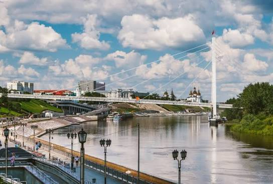
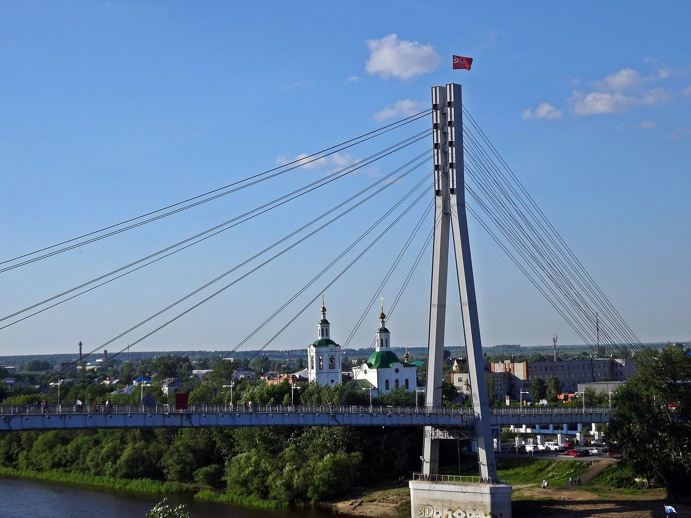
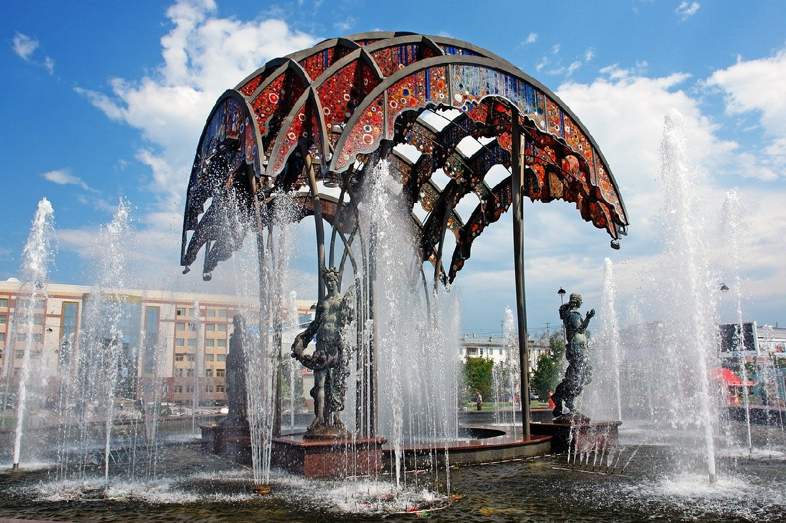
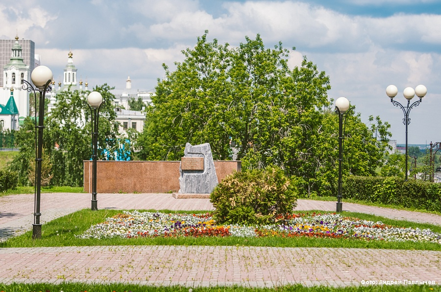
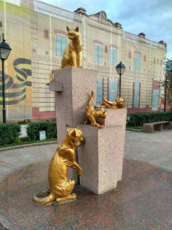
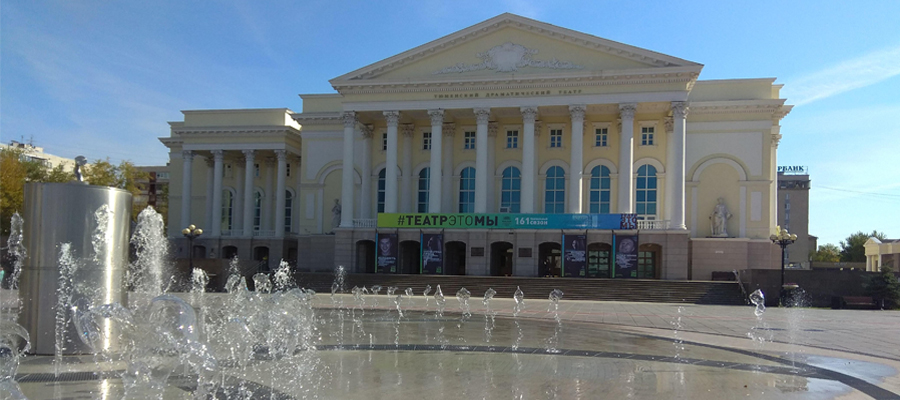

Прогулка
Набережная Туры
Главная «визитка» города. Четыре уровня, виды на воду и длинный маршрут без спешки. Лучше всего - ближе к вечеру.
Не полный справочник, а подборка точек, которые реально работают в обычный день - днём и ближе к закату.

Главная «визитка» города. Четыре уровня, виды на воду и длинный маршрут без спешки. Лучше всего - ближе к вечеру.

Пешеходный мост через Туру. Замки на перилах - уже клише, но вид на реку и фото на закате того стоят.

Фонтан, скамейки, уличные музыканты. Удобная точка «передохнуть и решить, куда дальше».

Отсюда логично начинать маршрут по старому центру: деревянные дома, тихие улицы и ощущение «другого города».

Небольшая и странно милая точка. Хорошо заходит как пауза между большими локациями.

Широкое пространство, огни и удобный финиш после прогулки по центру, особенно если идёте на спектакль.
Если времени мало - набережная + Мост Влюблённых + Цветной бульвар. Этого хватит, чтобы понять характер города. Полный круг - на странице маршрутов.